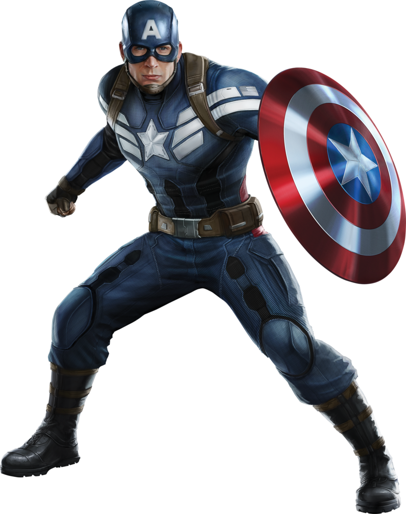
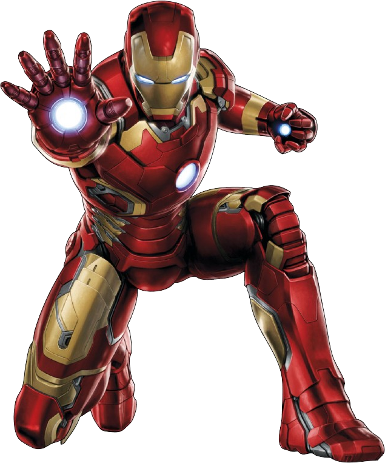
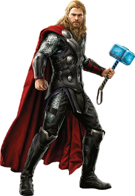
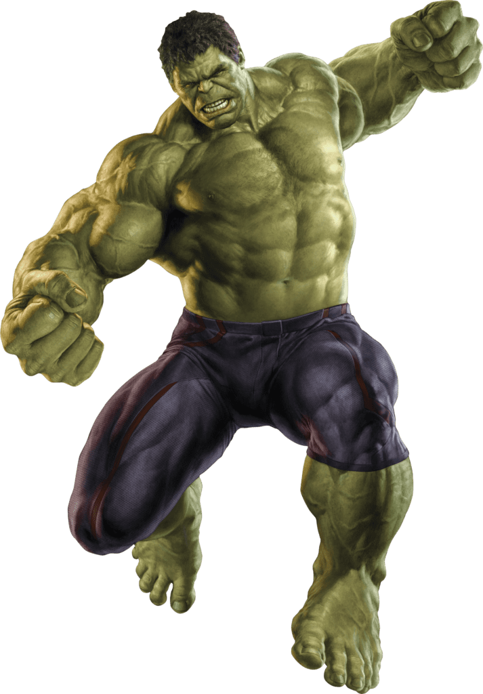
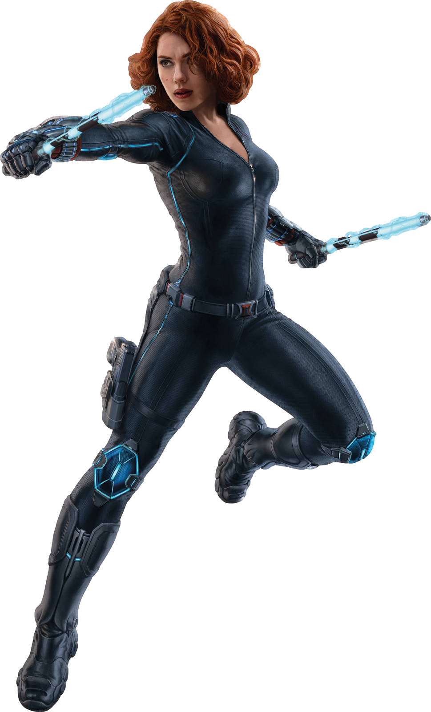
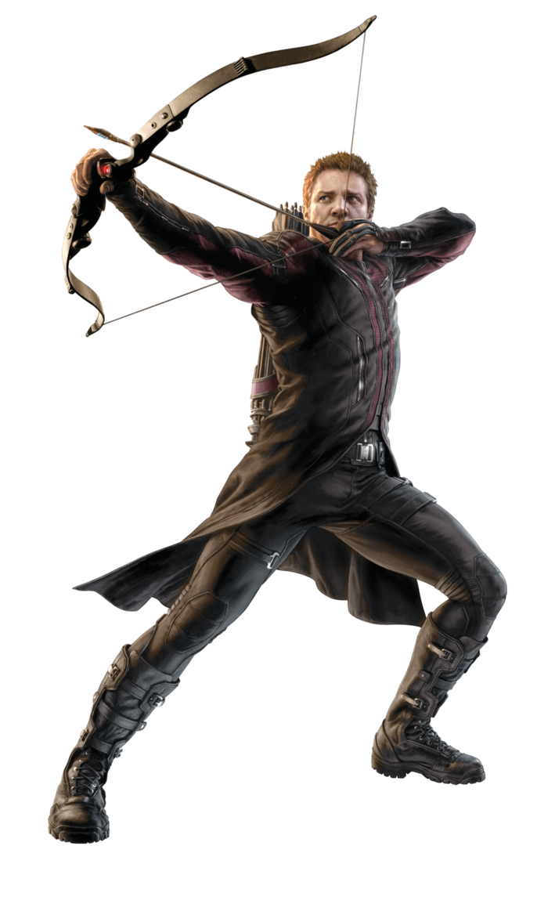

-
Capitão América
HP 900
Descrição
Um dos melhores lutadores do mundo, Rogers conhece inúmeras técnicas de combate corpo-a-corpo, mesmo se não tem superpoderes. Porém, graças ao soro do Supersoldado, é dono de força, agilidade, resistência, reflexos e capacidade de cura superiores aos dos seres humanos normais. Sua principal arma é um escudo feito de uma liga de vibranium e adamantium, que serve para protegê-lo de ataques e ainda pode ser lançado contra os inimigos com ação devastadora
-
Homem de ferro
HP 1000
Descrição
Gênio, bilionário, playboy e filantropo, é como se auto-descreve Tony Stark, após ser atacado, sequestrado e ser mantido em cativeiro, Tony usar sua genialidade para criar poderosas armaduras e combater vilões, assim realizando vários feitos incríveis e se tornando um dos maiores heróis da terra.
-
Thor
HP 1300
Descrição
Thor é virtualmente um deus de outra realidade, possuindo vastos poderes. Desta maneira, possui uma enorme força e velocidade sobre-humanas. Também é capaz de controlar os elementos da tempestade, gerando tempestades, raios, furacões e geadas. Além de possuir armas poderosas, como o martelo mágico Mjolnir.
-
Hulk
HP ????
Descrição
Diferente da super força comum entre heróis, o poder do Hulk vai ainda além. A força dele aumenta em proporção direta a sua raiva, de forma que ele já foi capaz de destruir um asteroide com duas vezes o tamanho da Terra. O personagem também evolui a resistência e o condicionamento físico de forma ilimitada. Isso porque seu corpo precisa ser capaz de resistir a seu próprio poder, para que ele não morra.
-
Viúva Negra
HP 800
Descrição
Sem nenhum poder sobre-humano, a força da vingadora vem de suas muitas habilidades como lutadora e seu amplo domínio das artes marciais. Ela foi treinada pelo Programa Viúva Negra da Sala Vermelha, onde foi criada para se tornar uma espiã russa. Lá, destacou-se e logo se tornou uma espiã-mestre e uma das maiores assassinas do mundo — antes de se tornar uma grande defensora das forças que ameaçam a vida na Terra.
-
Gavião Arqueiro
HP 700
Descrição
Clint Barton é um super-herói autoconfiante, mesmo não tendo poderes ele é capaz de dispara e acertar com uma precisão milimétrica os seus alvos apenas com um arco e flecha, também podendo enfretar inimigos em combate corpo-a-corpo com suas habilidades em artes marciais.